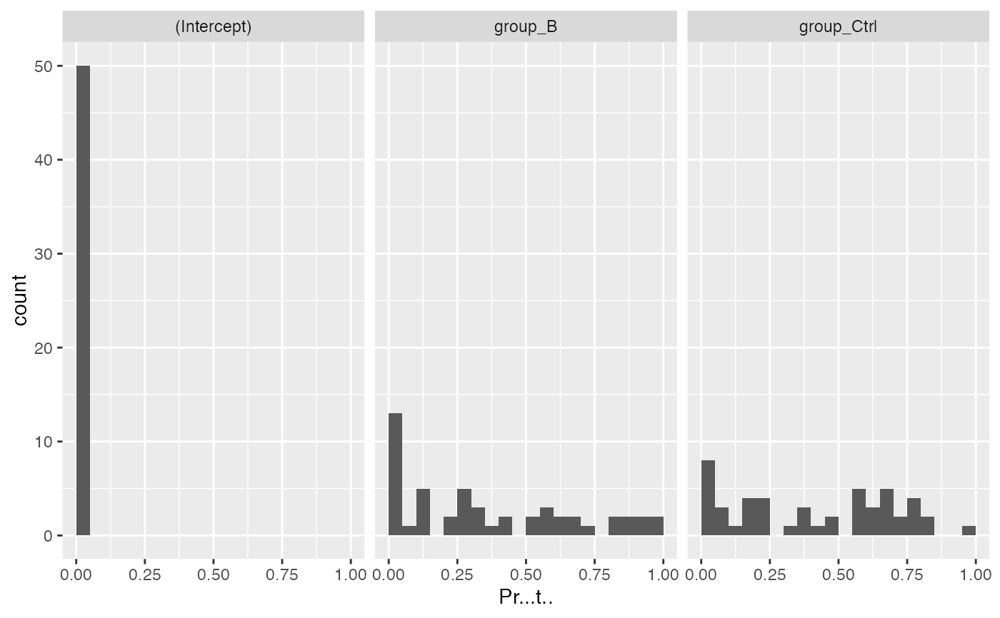
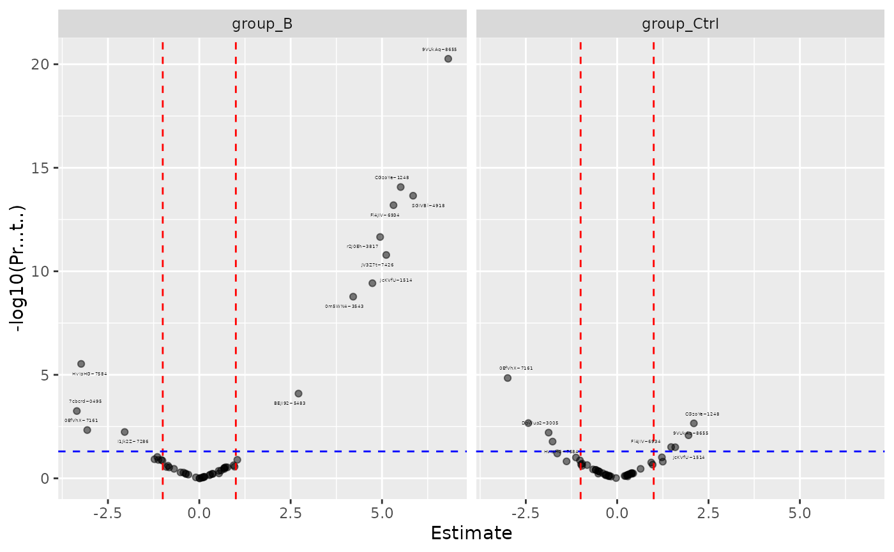
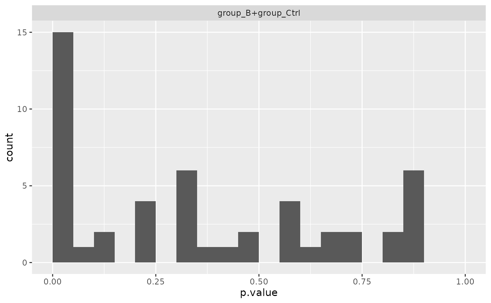

R6 class representing a limma modelling result
R6 class representing a limma modelling result
Details
Same API as Model: get_anova(), get_coefficients(),
coef_histogram(), coef_volcano(), anova_histogram().
See also
Other modelling:
AnovaExtractor,
Contrasts,
ContrastsDEqMSFacade,
ContrastsDEqMSVoomFacade,
ContrastsFirth,
ContrastsFirthFacade,
ContrastsFirthNestedFacade,
ContrastsLMFacade,
ContrastsLMImputeFacade,
ContrastsLMMissingFacade,
ContrastsLimma,
ContrastsLimmaFacade,
ContrastsLimmaImputeFacade,
ContrastsLimmaVoomFacade,
ContrastsLimmaVoomImputeFacade,
ContrastsLimpaFacade,
ContrastsLimpaNestedFacade,
ContrastsLmerNestedFacade,
ContrastsMissing,
ContrastsModerated,
ContrastsModeratedDEqMS,
ContrastsPlotter,
ContrastsRLMFacade,
ContrastsROPECA,
ContrastsROPECANestedFacade,
ContrastsRfitFacade,
ContrastsTable,
INTERNAL_FUNCTIONS_BY_FAMILY,
LR_test(),
Model,
ModelFirth,
StrategyLM,
StrategyLimma,
StrategyLimpa,
StrategyLmer,
StrategyLogistf,
StrategyRLM,
StrategyRfit,
build_contrast_analysis(),
build_model(),
build_model_glm_peptide(),
build_model_glm_protein(),
build_model_impute(),
build_model_limma(),
build_model_limma_impute(),
build_model_limma_voom(),
build_model_limma_voom_impute(),
build_model_limpa(),
build_model_logistf(),
compute_borrowed_variance(),
compute_borrowed_variance_limma(),
compute_contrast(),
compute_lmer_contrast(),
contrasts_fisher_exact(),
df.residual.rfit_prolfqua(),
get_anova_df(),
get_complete_model_fit(),
get_p_values_pbeta(),
group_label(),
impute_refit_singular(),
is_singular_lm(),
linfct_all_possible_contrasts(),
linfct_factors_contrasts(),
linfct_from_model(),
linfct_matrix_contrasts(),
list_facades(),
lookup_facade(),
merge_contrasts_results(),
model_analyse(),
model_summary(),
moderated_p_deqms(),
moderated_p_deqms_long(),
moderated_p_limma(),
moderated_p_limma_long(),
new_lm_imputed(),
pivot_model_contrasts_to_wide(),
plot_lmer_peptide_predictions(),
register_facade(),
sigma.rfit_prolfqua(),
sim_build_models_lm(),
sim_build_models_lmer(),
sim_build_models_logistf(),
sim_make_model_lm(),
sim_make_model_lmer(),
strategy_limma(),
strategy_limpa(),
strategy_logistf(),
summary_ROPECA_median_p.scaled(),
unregister_facade(),
vcov.rfit_prolfqua()
Super class
prolfqua::ModelInterface -> ModelLimma
Public fields
fitlimma MArrayLM object from lmFit
designdesign matrix
formulamodel formula
subject_idprotein ID column name(s)
model_namemodel name
rowdataprotein ID mapping from to_wide()$rowdata
trendpassed to eBayes
robustpassed to eBayes
dummy_modelone fitted lm for linfct extraction
p.adjustfunction to adjust p-values
imputed_proteinscharacter vector of protein ids (matching
rownames(fit$coefficients)) that were rescued via LOD imputation.ContrastsLimma$get_contrasts()reads this to tag refit rows with a"_imputed"modelName suffix so the rescue is visible downstream. Empty for builders that do not impute.
Methods
Method new()
initialize ModelLimma
Usage
ModelLimma$new(
fit,
design,
formula,
subject_id,
model_name,
rowdata,
trend = FALSE,
robust = FALSE,
dummy_model = NULL,
p.adjust = prolfqua::adjust_p_values,
imputed_proteins = character(0)
)Arguments
fitlimma MArrayLM from lmFit
designdesign matrix
formulamodel formula
subject_idprotein ID column name(s)
model_namemodel name
rowdataprotein ID mapping
trendpassed to eBayes
robustpassed to eBayes
dummy_modelone fitted lm for linfct extraction
p.adjustfunction to adjust p-values
imputed_proteinscharacter vector of LOD-rescued protein ids
Method anova_histogram()
histogram of ANOVA F-test p-values
Usage
ModelLimma$anova_histogram(what = c("p.value", "FDR"))Examples
istar <- sim_lfq_data_protein_config(Nprot = 50)
#> creating sampleName from file_name column
#> completing cases
#> completing cases done
#> setup done
lProt <- LFQData$new(istar$data, istar$config)
lProt$rename_response("transformedIntensity")
strat <- strategy_limma("transformedIntensity ~ group_")
mod <- build_model_limma(lProt, strat)
#> Warning: Partial NA coefficients for 1 probe(s)
coeffs <- mod$get_coefficients()
head(coeffs)
#> # A tibble: 6 × 6
#> protein_Id factor Estimate Std..Error t.value Pr...t..
#> <chr> <chr> <dbl> <dbl> <dbl> <dbl>
#> 1 0EfVhX~7161 (Intercept) 20.3 0.482 42.1 5.89e-143
#> 2 0m5WN4~3543 (Intercept) 20.5 0.482 42.6 1.17e-144
#> 3 76k03k~9735 (Intercept) 20.2 0.481 41.9 3.21e-142
#> 4 7QuTub~5556 (Intercept) 22.8 0.482 47.4 7.08e-159
#> 5 7cbcrd~0495 (Intercept) 17.2 0.681 25.2 3.32e- 82
#> 6 7soopj~3451 (Intercept) 26.3 0.481 54.7 3.79e-179
anova_tbl <- mod$get_anova()
head(anova_tbl)
#> # A tibble: 6 × 5
#> protein_Id F.value p.value factor FDR
#> <chr> <dbl> <dbl> <chr> <dbl>
#> 1 0EfVhX~7161 9.95 4.81e- 5 group_B+group_Ctrl 2.14e- 4
#> 2 0m5WN4~3543 26.8 2.57e-12 group_B+group_Ctrl 1.80e-11
#> 3 76k03k~9735 1.57 2.09e- 1 group_B+group_Ctrl 5.38e- 1
#> 4 7QuTub~5556 1.40 2.46e- 1 group_B+group_Ctrl 5.48e- 1
#> 5 7cbcrd~0495 6.12 2.22e- 3 group_B+group_Ctrl 8.35e- 3
#> 6 7soopj~3451 1.51 2.21e- 1 group_B+group_Ctrl 5.41e- 1
mod$coef_histogram()
#> $plot
#> Warning: Removed 1 row containing non-finite outside the scale range (`stat_bin()`).

#>
#> $name
#> [1] "Coef_Histogram_limma.pdf"
#>
mod$coef_volcano()
#> $plot
#> Warning: Removed 1 row containing missing values or values outside the scale range
#> (`geom_point()`).

#>
#> $name
#> [1] "Coef_VolcanoPlot_limma.pdf"
#>
mod$anova_histogram()
#> $plot
#> Warning: Removed 1 row containing non-finite outside the scale range (`stat_bin()`).

#>
#> $name
#> [1] "Anova_p.values_limma.pdf"
#>